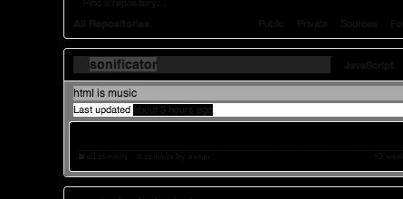

sonificator make every Web Pages to Music. Experience sound and visual of the structure of DOM and Webpages.
sonificatorは、あらゆるウェブページから音楽を作り出します。サウンドとビジュアルでウェブページのDOMの構造を体験できます。
About
Sonification is the use of non-speech audio
Sonification - Wikipedia, the free encyclopediato convey information<
This program sonificator can built a music from the DOM structure with simple rule. sounds are designed good to listen like ambient or experimental erectoronic music.
sonificator also provide a visual highlight animation of the webpage synchronized to the sound. This may help you know which sound events are come from which element on the page.
How To Play
Use Bookmarklet
- Save this Bookmarklet link to your browser
- Go to webpage you like
- then, just run the bookmarklet
Keyboard Shortcuts
You can use these shortcuts to conrol sound playing
(Space bar) Toggle playing
Toggle play and pause of sound
再生/一時停止
↑ Tempo up
Up the BPM
再生のテンポを上げる
↓ Tempo down
Down the BPM
再生のテンポを下げる
A Rewind
Rewind the playing position to the beginning of the page.
ページの先頭まで再生を巻き戻す
C Toggle change key
sonificator do musical key change when h1 and h2 was found. you can toggle this behavior on and off.
sonificator は再生中にh1タグとh2タグを見つけたときに音楽的な転調を行います。このショートカットは転調機能のオン/オフを切り替えます。
System requirements
Can I play this program?
Web browser that supports Web Audio API
sonificator is using Web Audio API to playback sounds. Currently, Latest Google Chrome is the only one that supports Web Audio API.
sonificator はオーディオの再生に Web Audio API を使用します。現在のところ、Google Chrome が唯一の選択肢です。
System check
Click to test your browser supports Web Audio API
お使いのブラウザが Web Audio API をサポートしているかをテストします
Test
- Supported
- Not Supported
Very quick test play
here is pretty button to test this page
NOTE click the button avobe, your browser soundsGood music pages
- GitHub profile page
- 404 Blog Not Found
- facebook Arter toooo long intro (include long silent break), you can find ambient sound in the wall.